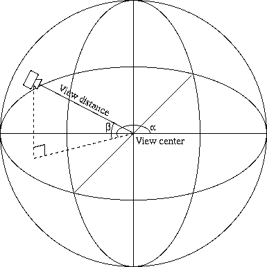

|  |
| Figure 1: ProteinShop's camera model. The perspective projection, fixed field-of-view camera moves on the surface of a sphere around the current view center. |
If the left mouse button is released while the mouse is still being moved, ProteinShop will keep the display spinning according to the mouse's movement direction and speed at the moment the mouse button was released. Spinning will stop as soon as any mouse button is depressed again.